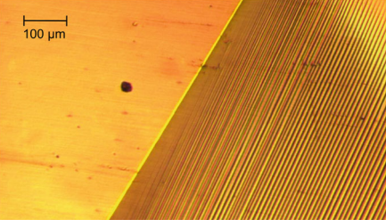
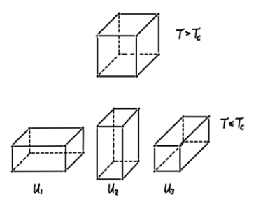
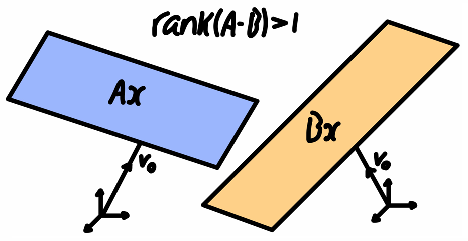
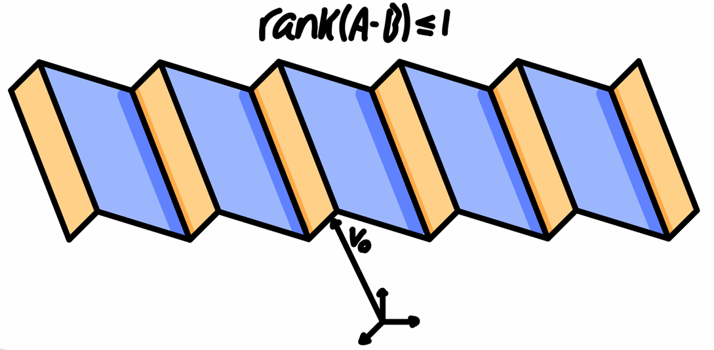

Shape memory alloys (SMAs) exhibit an affect whereby, after being deformed, and once sufficient heat is applied, they return to their original undeformed shape. Some shape memory alloys have another effect called super elasticity where any bends in the material are immediately reverted.
Beyond their interest to material scientists [1, 2], there are many applications in engineering such as for vibration dampers which are useful for noise reduction in aerospace engineering or for reducing the effects of earthquakes on buildings in civil engineering
[3, 4, 5, 6];
for flexible glasses frames; and for light-weight actuators in robotics [7, 8].
We however will stick to looking at the mathematics that goes into modelling these materials.

Above is an image of the cubic-orthorhombic transition in CuAlNi which was taken by Hanuš Seiner [9] using optical microscopy. Note the inhomogeneous behaviour - the material on the left side is flat while the right side has an oscillatory pattern.
There are many other types of SMAs including Indium-Thallium, Nickel-Aluminium (which are cubic-tetragonal transitions modelled mathematically as will be seen later), Nickel-Titanium (or "Nitinol" which is a cubic-monoclinic transition), and even the fictional Wapometal from One Piece!

In solid materials, atoms are arranged into a crystal lattice, with the unit cells of this lattice taking on many forms. Core to the shape memory effect (SME) is a solid-solid transition from the austenitic phase
(one type of unit cell) above a critical temperature to the martensitic phase (many types of unit cell) below a critical temperature (the image on the right shows the unit cells in the cubic-tetragonal transition).
The larger number of variants of the unit cell of martensite corresponds to a breaking of the symmetry that the material enjoyed at higher temperatures.
Nucleation events cause these variants to collect into regions, that is, it is energetically favourable to group types of unit cells. Together these regions form a microstructure responsible for many macroscopic properties of the alloy including the shape memory effect.
Provided that there is a certain relation between these variants, the regions connect nicely without relative diffusion of atoms (no macroscopic deformation results from this transition).
Energy Minimisation Setup
Consider a volume of interest, called the reference domain, \(\Omega\subset\mathbb{R}^d\) which is open, bounded, connected.
By the Cauchy-Born rule [10], a macroscopic linear deformation \(u : \Omega\rightarrow\mathbb{R}^d\) can be applied to increase the energy density of the lattice within the reference domain to \(W(F,T) \geq 0\) where
\(F(x):=\nabla u(x)\) is the deformation gradient matrix and \(T\geq 0\) is the temperature of the reference domain (assumed to be homogeneous).
This project covers the energy minimisation description of SMAs. The energy functional depends on the deformation gradient and the temperature, \(T\):
As we expect the energy density, \(W\), to be non-negative, we can minimise the energy functional by taking deformation gradients within the kernel of the energy density \((~\nabla u \in K(T) := W_T^{-1}(0)~)\), and so, we need not know the exact form of \(W\).
We will make some assumptions on the form of \(W\) [11] that will allow us to derive the "Multi-Well Inclusions" used to describe SMAs. These assumptions are the following:
M1: Not performing a deformation must not increase the energy density:
\(\hspace{3cm} W(Id, T) = 0\).
M2: The energy density is invariant under a change of frame:
\(\hspace{3cm} W(QF, T) = W(F,T)\) for all \(Q\in SO(d)\).
M3: Performing symmetries of the crystal does not change the energy density:
\(\hspace{3cm} W(FR_i, T) = W(F, T)\)
for all \(R_i\) in the symmetry point group of the crystal.
M4: Compressing or expanding the crystal lattice costs energy:
\(\hspace{3cm} W(\alpha\cdot Id, T) > W(Id, T)\)
where \(\alpha\in [0,\infty)\backslash \{1\}\) is the scaling factor of the deformation.
M5: Infinite compression and infinite stretching both cost infinite energy:
\(\hspace{3cm} \text{If }\det(F)\rightarrow 0\text{ or }|F|\rightarrow\infty, \text{ then }W(F,T)\rightarrow\infty\)
where \(|\cdot|\) denotes the Frobenius norm on matrices.
The multi-well kernels that are core to SMAs can be derived (surppressing \(T\) in the notation) from the energy density assumptions \((M2)\) and \((M3)\). Suppose that \(F \in K\), then \(QF R_i \in K\) for
\(Q \in SO(d)\) and \(R_i\) in the symmetry point group of the martensitic material. We denote the variants by \(U_i := F R_i\). Then we can write the
minimising set as a finite union of “Energy Wells”:
\(\hspace{3cm} K = SO(d)U_1 \cup SO(d)U_2 \cup \cdots \cup SO(d)U_n.\)
We may assume that the variants preserve orientation, and so \(\det(U_i) > 0\) for all \(i \in [1, n]\).
By polar decomposition we assume that the \(U_i\) are positive definite symmetric matrices (the remaining orthogonal matrix is absorbed into SO(d)).
The differential inclusions with this minimising set are called multi-well inclusions. The general problem for modelling SMAs is as follows:
\(\hspace{3cm}\text{Solve}\hspace{.5cm}\begin{equation*}
\left\{
\begin{aligned}
&u\in W^{1,\infty}(\Omega; \mathbb{R}^{3}),\\
&\nabla u \in K(T).
\end{aligned}
\right.
\end{equation*}\)
\(\hspace{1cm}\text{where}\hspace{.5cm}\begin{equation*}
K(T) := \left\{
\begin{aligned}
&SO(3)Id,\hspace{.5cm}\text{if \(T\) exceeds the critical temperature,}\\
&\bigcup_{i=1}^n SO(3)U_i \hspace{.5cm}\text{if \(T\) is below the critical temperature}.
\end{aligned}
\right.
\end{equation*}\)
Deformations, \(u\), that satisfies this inclusion must be pointwise minimisers of our
energy functional. However, not all minimisers satisfy this differential inclusion exactly, there may be deformations that minimise the energy functional but only approximately
satisfy the differential inclusion.
For crystalline materials, we expect compact \(K\). This is a reasonable expectation due
to large deformations of \(\Omega\) causing large energy increases (boundedness) and due to the
expected continuity of the energy density, and because \(\{0\}\) is closed, \(K\) is also closed
(closed). The compactness then follows from the Heine-Borel theorem applied to \(\mathbb{R}^{d\times d}\).
Non-compact \(K\) also gives way to different theory [12] but for the aims of this project,
will be largely ignored.
Before we return to material science and multi-well inclusions, we will introduce some mathematics that is used in proving existence of particular solutions.
The Direct Method:
The direct method is used to prove existence of minimisers to functionals over a Banach space. However, this existence isn't free, the functional is required to be lower semicontinuous and coercive.
We will use the weak form of this method due to the strong form relying on compactness which is uncommon within a infinite-dimensional Banach space.
Weak Coercivity:
A functional \(\mathcal{F}: X\rightarrow\mathbb{R}\cup\{\infty\}\) defined on a Banach space \(X\) is weakly coercive if the sublevel set
\(\hspace{2cm}\{u\in X: \mathcal{F}[u] \leq M\}\text{ is sequentially weakly precompact for all }M\in\mathbb{R}.\)
That is, any sequence in the sublevel set has a weakly converging subsequence in the ambient space, \(X\).
Weak Lower Semicontinuity:
A functional \(\mathcal{F}: X\rightarrow\mathbb{R}\cup\{\infty\}\) defined on a Banach space \(X\) is weakly lower semicontinuous if
where \(u_j \in X\) is a sequence with a weak limit \(u\) in \(X\).
The Weak Direct Method:
Let \(X\) be a reflexive Banach space or a closed affine subset of such a space.
Let \(\mathcal{F} : X \rightarrow \mathbb{R} \cup \{\infty\}\) be weakly coercive and weakly lower semicontinuous.
Then \(\mathcal{F}\) obtains a minimum in \(X\).
If all the values of \(u\) yield infinite \(\mathcal{F}\), all values trivially minimise \(\mathcal{F}\) and we are done.
Assume that there is a value, \(u\), which has finite \(\mathcal{F}\). We take a minimising sequence \(u_j \in X\) so that
Then there exists \(M \in \mathbb{R}\) such that \(\mathcal{F}[u_j] \leq M\) for all \(j \in \mathbb{N}\).
By weak coercivity, there exists a weakly converging subsequence \(u_{j_k} \rightharpoonup u_\ast\) (due to .... \(u_\ast \in X\)) such that
Thus, we have \(\mathcal{F}[u_\ast] = m\) for our desired minimum.
While this method gives existence of minimisers to many functional problems, in our material science setup, we do not wish to rely on the exact form of the energy functional \(E\).
Instead, we place two more restrictions on the energy density \(W\). These restrictions replace coercivity and lower semicontinuity.
p-Coercivity Bound [13, page 28]:
For a Carathéodory integrand \(h: \Omega \times \mathbb{R}^{d\times d} \rightarrow [0,\infty)\) (\(\text{i.e. } x \mapsto h(x, F) \text{ Lebesgue-measurable and } F \mapsto h(x, F) \text{ continuous}\)) which satisfies the p-coercivity bound
From this, we see that \(\sup_{j\in\mathbb{N}} \|\nabla u_j\|_{L^p} < \infty\).
Set \(u_0 \in W^{1,p}_g(\Omega; \mathbb{R}^d)\) and so we have \(u_j-u_0 \in W^{1,p}_0(\Omega; \mathbb{R}^d)\) and \(\sup_{j\in\mathbb{N}} \|\nabla(u_j - u_0)\|_{L^p} < \infty\).
Since \((u_j - u_0)|_{\partial \Omega} = 0\) is a \(W^{1,p}\)-function, we may apply the Poincaré inequality to obtain,
Finally, by weak compactness, we have that the norm-bounded set \((u_j)\) is sequentially weak precompact.
Tonelli-Serrin [14, 15]:
Let \(h:\Omega\times \mathbb{R}^{d\times d}\rightarrow [0,\infty)\) be Carathéodory such that
\(\hspace{3cm} h(x,\cdot)\text{ is convex for almost every }x\in\Omega\)
Then \(\mathcal{F}\) is weakly lower semicontinuous on \(W^{1,p}(\Omega;\mathbb{R}^d)\) for any \(p\in (0,\infty)\).
We first show that \(\mathcal{F}\) is strongly lower semicontinuous. Let \( u_j \rightarrow u\) in \(W^{1,p}(\Omega; \mathbb{R}^d)\) and so, \(\nabla u_j \rightarrow \nabla u\) in \(L^p (\Omega; \mathbb{R}^d)\).
By LINK, there exists a (non-labelled) subsequence such that \(\nabla u_j \rightarrow \nabla u\), almost everywhere in \(\Omega\).
By assumption, we have \(h(x, \nabla u_j(x)) \geq 0\). Using Fatou's lemma and \(h\) being Carathéodory,
From the strong lower semicontinuity, and since \(v_j \rightarrow u\) strongly, we obtain \(\mathcal{F}[u] \leq \liminf_{j\rightarrow \infty} \mathcal{F}[v_j]\). The end of the proof follows.
By switching to properties of the energy density, we have now steadily moved closer to a tool that can be used to study minimisers of the energy functional.
However, with these properties, we have introduced an issue that must be addressed: There is a contradiction between the assumptions about the energy density and the convexity we wish to impose upon it.
This is illustrated through considering a rotation of \(\pi/3\) radians about some axis represented by the matrix
A clear contradiction to the assumption that compressions cost a larger energy \((M4)\).
We now know that we cannot use convexity, but we still desire lower semicontinuity. To remedy this issue, we need a weaker 'quasi' form of convexity that still guarantees lower semicontinuity.
Quasiconvexity:
The notion of quasiconvexity was first introduced in 1952 by Charles B. Morrey Jr. [16].
It was introduced to provide a necessary and sufficient condition on the integrand for the
functional to be weakly lower semicontinuous.
Quasiconvexity:
A locally bounded Borel measurable function \(h : \mathbb{R}^{d\times d} \rightarrow \mathbb{R}\) is quasiconvex if
for all \(F \in \mathbb{R}^{d\times d}\), all \(\psi \in W^{1,\infty}_0 (\Omega; \mathbb{R}^d)\), and for a bounded Lipschitz domain \(\Omega\subset\mathbb{R}^d\).
Note the physical intuition of this inequality: applying a continuously differentiable deformation, \(\psi\), to the
interior of a region, \(\Omega\), of the crystal will expectedly increase the average internal energy of the material.
Quasiconvexity is notoriously difficult to prove in a function. It will be useful to introduce an even weaker notion of convexity called rank-one convexity.
Convexity Hierarchy:
A locally bounded Borel measurable function \(h : \mathbb{R}^{d\times d} \rightarrow \mathbb{R}\) follows the hierarchy below
This measure is a probability measure as it is bounded \(|\langle h, \mu \rangle| \leq \|h\|_\infty\), it has positive \(\langle h, \mu\rangle\) (\(h\) shifted to be positive), and normalises as \(\langle \mathbb{1}, \mu \rangle = 1\).
Hence we write \(\mu\in\mathcal{M}^1(\mathbb{R}^{d\times d})\). Because the barycenter of \(\mu\) is
Setting \(V(x) := \nabla \psi\) for some \(\psi\in W^{1,\infty}_0 (\Omega; \mathbb{R}^d)\), gives us the first statement.
Let \(A,B\in\mathbb{R}^{d\times d}\) be rank-one connected through \(B-A=a\otimes \hat{n}\) for \(a\in\mathbb{R}^d \backslash \{0\}\) a non-zero vector and \(\hat{n}\in\mathbb{S}^{d-1}\) a unit vector.
Let \(Q_n\) be a cube centered at the origin such that \(|Q_n| = 1\) and \(\hat{n}\) is orthogonal to a face of the cube.
Fix \(t\in(0,1)\), set \(F:= t A + (1-t) B\) and define \(u_j \in W^{1,\infty}_0(Q_n; \mathbb{R}^d)\) as the sequence of `jagged' functions
Note that the gradient of this laminate takes on values in \(\{A,B\}\):
\(\hspace{2cm}\begin{align*}
\nabla u_j \big|_{D_{j,n,0}} &= F + \nabla \left[-\frac{1}{j}(1-t)(jx\cdot\hat{n} - \lfloor jx\cdot\hat{n}\rfloor)\right]\otimes a \\ &= F - (1-t)a\otimes\hat{n} \\ &= t A + (1-t)B - (1-t)(B-A) = A,
\end{align*}\)
and similarly, \(\nabla u_j \big|_{D_{j,n,1}} = B\). We also have \(u_j \overset{\ast}{\rightharpoonup} Fx\) in \(W^{1,\infty}\) due to \(\phi_0\) being uniformly bounded. In order to use the quasiconvexity of \(h\), we must first show that
\(\hspace{2cm}u_j(x) - Fx = \frac{1}{j}\phi_0 (jx\cdot\hat{n}-\lfloor jx\cdot\hat{n} \rfloor)\)
has compact support. To achieve this, we must find a function with the properties of \(u_j\), but which has boundary values of \(Fx\). This will be done through taking a sequence of convex combinations,
with \((\rho_k)_k \subset C^\infty_c (Q_n; [0,1])\) such that \(\lim_{k\rightarrow\infty} |Q_n \backslash \rho_k^{-1}(1)| = 0\). That is \(\lim_{k\rightarrow\infty}v_{j,k} = u_j\) almost everywhere. Note that because \(\rho_k\) has compact support in \(Q_n\), \(v_{j,k}(x) = Fx\) close to the boundary \(\partial Q_n\). By the Rellich-Kondrachov theorem, \(W^{1,\infty}\) is embedded compactly within \(L^\infty\) and so \(u_j \overset{\ast}{\rightharpoonup}Fx\) in \(W^{1\infty} \implies u_j \rightarrow Fx\) in \(L^\infty\). It is now safe to compute the following,
because the \(\nabla u_j\) are \(L^\infty\)-bounded. Thus, \(\|\nabla v_{j,k}\|_{L^\infty}\) is eventually bounded independent of \(k\in\mathbb{N}\) and so we take a bounded subsequence \(\|\nabla v_{j(k),k}\|_{L^\infty}\). As \(h\) is locally bounded, we can bound
Thus we have arrived at rank-one convexity, completing the proof.
It is noteworthy that, in one dimension, both quasiconvexity and rank-one convexity reduce to convexity. It is generally unknown whether rank-one convexity is equivalent to
quasiconvexity, but in three dimensions and higher, they are distinct [17]. The remaining
case of two dimensions is an open problem known as Morrey's conjecture [18, 19,
20, 21].
Lemma:
If \(h: \mathbb{R}^{d\times d}\rightarrow \mathbb{R}\) is rank-one convex and there are \(M>0\), \(p\in [1,\infty)\) such that
Let \(R > 0\) and choose \(F_1\in\mathbb{R}^{d\times d}\) such that \(h(F_1) = \inf_{|A|\leq R} h(A)\). Let \(F_1,\cdots,F_{2^{d^2}}\) be the, not necessarily distinct, matrices obtained after flipping the sign of the elements within \(F_1\).
Any two matrices that differ only by the sign of a single element, say at \((i,j)\), lie on the same rank-one line \(\mathbb{R}(e_i\otimes e_j)\). In full, these \(2^{d\times d}\) matrices average to zero and so, by rank-one convexity,
Lemma:
If \(h\) has p-growth for some \(p\in[1,\infty)\) and \(M>0\) then,
in the definition of quasiconvexity, we may test with all \(\psi\in W^{1,p}_0(\Omega; \mathbb{R}^d)\) instead of all \(\psi\in W^{1,\infty}_0(\Omega; \mathbb{R}^d)\).
Hello
We now arrive at Acerbi and Fusco's 1984 simplification of the proof of lower semicontinuity from quasiconvexity [22].
Morrey-Acerbi-Fusco Theorem:
For \(p \in (1, \infty)\) and \(h : \Omega \times \mathbb{R}^{d\times d} \rightarrow \mathbb{R}_{\geq 0}\) a Carathéodory function with p-growth such that
\(\hspace{2cm}F \mapsto h(x, F) \text{ is a.e. quasiconvex, }\)
the functional \(F \mapsto \int_\Omega h(x,F)~dx\) is then weakly lower semicontinuous on \(W^{1,p}(\Omega; \mathbb{R}^d)\).
At this point in my dissertation, due to a page limit, I omitted the proof in favour of introducing Young measures which are a crucial tool in proving this theorem.
Here, I will confine Young measuresHowdy to another page and proceed with the proof.
Hello
NOTE: CHECK SOBOLEV SPACES W/ \(p=\infty\) or not
The Quasiconvex Direct Method:
For \(p\in (1,\infty)\), let \(h(x, \cdot)\) satisfy a p-coercivity bound, a p-growth bound and be quasiconvex for all \(x\in\Omega\),
then its corresponding integral functional, \(\mathcal{F}\), obtains a minimum in \(W^{1,p}(\Omega; \mathbb{R}^d)\).
Recall that \(W^{1,p}(\Omega; \mathbb{R}^d),p\in (1,\infty)\) is a reflexive Banach space and so, after obtaining weak coercivity and weak lower semicontinuity, we apply the weak direct method to conclude this result.
In order to obtain weak coercivity and weak lower semicontinuity, we invoke the propersition from the previous section and the Morrey-Acerbi-Fusco Theorem.
This form of the direct method has it's uses but, like with convexity, imposing a p-growth bound on the integrand has its own problems with the assumptions of our material \((M1-5)\).
In particular, contradictions with \((M5)\) arise when considering the deformation gradient represented by the matrix
This matrix is such that as \(a \downarrow 0\), we have \(\det(F_a) \downarrow 0\) and \(|F_a| \rightarrow 1\).
From \((M5)\), we expect that \(W(F_a)\rightarrow \infty\) however, due to the p-growth bound, \(|W(F_a)| \leq M(1+|F_a|^p) \rightarrow 2M\) a clear contradiction.
The problem of removing the p-growth bound from the assumptions of the Morrey-Acerbi-Fusco theorem is still an open one.
We can, however, slightly strengthen our notion of quasiconvexity to the so called polyconvexity. Introduced by Ball [23] in YEAR, this notion lies between convexity and quasiconvexity in the hierarchy.
Polyconvexity opened up the problem of proving existence of minimisers to many real world functionals in nonlinear elasticity theory (See Mooney-Rivlin and Ogden materials [24 , 25]).
Rigidity:
When we set up the differential inclusion used in material science, we discussed how not every functional minimiser satisfies the inclusion exactly - some only approximately.
Nevertheless, deviations of the gradient from the kernel can be treated as perturbations from exact solutions. The form of minimisers can thus be studied through solutions to the differential inclusion.
NOTE: ZHANGS LEMMA
A lack of rigidity in a differential inclusion allows solutions to have a low regularity, rapidly oscillating between gradients within the kernel.
Exact Rigidity:
Exact solutions, \(u \in W^{1,\infty}(\Omega; \mathbb{R}^d)\), to a differential inclusion have gradients that lie
in \(K\) almost everywhere in \(\Omega\).
A differential inclusion is called “Rigid for exact solutions” if all exact solutions are affine linear.
Approximate Rigidity:
Approximate solutions are uniformly norm bounded sequences \((u_j) \subset W^{1,\infty}(\Omega; \mathbb{R}^d)\) such that
A differential inclusion is called “Rigid for approximate solutions” if for all approximate solutions \((u_j) \subset W^{1,\infty}(\Omega; \mathbb{R}^d)\) such that
\(\hspace{2cm}u_j \overset{\ast}{\rightharpoonup} u \in W^{1,\infty}(\Omega; \mathbb{R}^d) \hspace{.5cm}\text{ and }\hspace{.5cm} u_j|_{\partial\Omega} = Fx\text{ for some } F\in\mathbb{R}^{d\times d}\)
it holds that
\(\hspace{3cm}\nabla u_j \rightarrow \nabla u\text{ in measure}\hspace{.5cm}\text{ and }\hspace{.5cm}\nabla u = \text{const} = F.\)
For now, we focus our efforts on the smallest non-trivial model: the Two-gradient toy model, which will provide insightful theory on the properties that allow microstructure to form.
The Two-Gradient Inclusion
Consider the differential inclusion with a two-element kernel,
\(\hspace{3cm}
\begin{cases}
u\in W^{1,\infty}(\Omega; \mathbb{R}^d),\\
\nabla u \in \{A,B\} \text{ in }\Omega
\end{cases}\)
The key property is the rank-one connection between \(A\) and \(B\). That is,
If \(\text{rank}(B-A) \leq 1\), \(A\) and \(B\) are said to be rank-one connected.
Note this is equivalent to \(B-A = \mathbf{a}\otimes \mathbf{n} = \mathbf{a}\mathbf{n}^T\) for \(\mathbf{a}\in\mathbb{R}^d\) and \(\mathbf{n}\in\mathbb{S}^{d-1}\). Indeed,
If \(\text{rank}(A-B) \geq 2\), \(A\) and \(B\) are said to be not rank-one connected.
The Ball-James Theorem [26]:
For \(A,B \in \mathbb{R}^{d\times d}\) and for \(\Omega\) an open, bounded and connected subset of \(\mathbb{R}^d\), \(\hspace{.5cm}1.\) If \(A\) and \(B\) are not rank-one connected, then the two-gradient inclusion is rigid for both exact and approximate solutions. \(\hspace{.5cm}2.\) If \(A\) and \(B\) are rank-one connected then, for \(\Omega\) additionally convex, the two-gradient inclusion is not rigid for exact nor approximate solutions.


Throughout this proof, we can make a simplification without loss of generality: Translate
the set K = {A, B} into {A, 0}.
\( 1)\hspace{.5cm} \) For the non-rank-one connected case (rank\((A) > 1\)), we start with the exact solutions.
Consider \(u\) to have a gradient \(\nabla u = Ag\) for some function \(g : \Omega\rightarrow\mathbb{R}\). Through
mollification, we assume further that both \(u\) and \(g\) are sufficiently smooth.
The goal is to show that \(g\) is a constant so that \(u\) is affine. We do this through
taking the gradient of \([\nabla u]^k_j = A^k_j g\) and remembering that \(u\) is sufficiently smooth as follows:
If \(g\) is constant, we have that \(u\) is affine and so we are done. Suppose instead that \(g\) is not constant such that there exists a point \(x\in\Omega\) with \(\zeta(x) := \nabla g(x) \neq 0\).
Defining \(a^k (x) := A^k_j / \zeta_j(x)\) for any \(j\) such that \(\zeta_j(x) \neq 0\), which is well-defined through \((\ast)\), we can write
\(\hspace{2cm} A = a(x)\otimes \zeta(x).\)
Thus giving the contradiction \(1 < \text{rank}(A) \leq 1\); proving that \(g\) is constant. Due to \(\Omega\) being connected, we have that \(u\) is affine.
Now that the exact solutions have been dealt with, we move onto proving rigidity for the approximate solutions. Because rank\((A) > 1\), there exists a non-zero \((2 \times 2)\)-submatrix
determinant of \(A\) which we call \(M \in \mathbb{R}^{2\times 2}\).
Consider the half-space of values of \(\Omega\) with \(\nabla u_j (x)\) closer to \(A\) than to \(B = 0\),
Since dist\(( \nabla u_j , \{A, 0\}) \rightarrow 0\) in measure, \(\nabla u_j - A\mathbb{1}_{D_j} \rightarrow 0\) in measure.
Consider, further, a subsequence (not made explicit) such that \(\mathbb{1}_{D_j}\overset{\ast}{\rightharpoonup}\chi\) in \(L^\infty\). (WHY CAN WE ASSUME THIS?)
For \(w \in L^1(\Omega)\) and \(\epsilon > 0\), compute
Z
Ω
(∇uj (x) − A1Dj )w dx =
Z
{|∇uj −A1Dj |>ε}∪{|∇uj −A1Dj |<ε}
(∇uj (x) − A1Dj )w dx
≤ ∥∇uj − A1Dj ∥L∞
Z
{|∇uj −A1Dj |>ε}
w dx + ε∥w∥L1
→ 0 + ε∥w∥L1 as j → ∞.
Taking ε > 0 arbitrarily small, we get ∇uj − A1Dj
∗
⇀ 0 in L∞. We can now say
∇uj = (∇uj − A1Dj ) + A1Dj
∗
⇀ Aχ in L∞.
By the weak* sequential continuity of submatrix determinants, in L∞,
∇uj
∗
⇀ Aχ =⇒ M (∇uj ) ∗
⇀ M (Aχ) = M (A)χ2.
We also compute, similarly to above, M (∇uj ) − M (A)1Dj
∗
⇀ 0 in L∞. Now,
M (∇uj ) = (M (∇uj ) − M (A)1Dj ) + M (A)1Dj
∗
⇀ M (A)χ.
By uniqueness of limits, M (A)χ2 = M (A)χ and due to M (A)̸ = 0, we have that
χ ∈ {0, 1}. Indeed, χ = 1D and ∇u = A1D for some D ⊂ Ω. Since 1Dj
∗
⇀ 1D in
15
L∞, for 1Ω ∈ L1
∥1Dj ∥2
L2 =
Z
1Ω1Dj dx →
Z
1Ω1D dx = ∥1D∥2
L2 .
So ∥1Dj ∥L2 → ∥1D∥L2 which, by the Radon-Riesz property of Lp-spaces [28] gives
the strong convergence 1Dj → 1D in L2. Hence, we have 1Dj → 1D in measure and
so
∇uj = (∇uj − A1Dj ) + A1Dj → 0 + A1D = ∇u in measure.
As the sequence uj is an approximate solution, ∇u ∈ {A, 0} almost everywhere in
Ω and, using the exact case, we reach our result for this subsequence. This does not
change with different subsequences as we assumed weak* convergence of the solution.
2) We now have A = a ⊗ ˆn and once again assume that ∇u = Ag. Computing a
directional derivative in a direction, v, orthogonal to ˆn,
d
dtu(x + tv) t=0
= ∇u(x) · v = Ag(x) · v = [aˆnT ]vg(x) = a[ˆnT v]g(x) = 0,
we see that u is constant in any direction orthogonal to ˆn. As Ω is assumed convex,
g only depends on x · ˆn and we may write g(x) = h′(x · ˆn) such that
∇u(x) = Ah′(x · ˆn).
Due to ∇u ∈ {A, 0}, we have h′(x · ˆn) ∈ {1, 0} and so our exact solutions are of the
form
u(x) = v0 + h(x · ˆn)a.
We note that exact solutions need not be affine and so the two-gradient inclusion is
not rigid
Larger minimising sets, \(K\), such as the \(N\)-gradient inclusions have similar rigidity results:
For \(N=3\), rigidity of exact and approximate solutions is maintained when there are no rank-one connections. This result is due to Šverák [SVER].
For \(N=4\), exact solutions maintain rigidity [T4] however, approximate solutions can now fail to be rigid. One example of this is the Tartar square \(T_4\) configuration of four gradients with none of the pairs having rank-one connections. This gives a non-rigid approximate solution through successively taking rank-one approximations to each gradient and taking a limit.
And for \(N=5\), even if there are no rank-one connections, rigidity is not promised for exact or approximate solutions. This result is due to Preiss and Kirchheim [kirchheimmax].
To study more complex problems than the N-gradient inclusions, such as the multi-well inclusions that appear in material science, we must introduce both the quasiconvex hull of \(K\) in order to analyse the rigidity of approximate solutions, and convex integration to analyse the rigidity of exact solutions.
The Semiconvex Hulls:
Certain Young measures give way to the quasiconvex hull of \(K\) which has a strong connection to the rigidity of approximate solutions.
The Quasiconvex Hull:
The quasiconvex hull of a set, \(K\), is
That is we define \(\mathcal{M}^{qc}(K)\) as the set of homogeneous gradient Young measures with support in \(K\).
The second equality follows from the Kinderlehrer-Pedregal Theorem [X, X+1].
These quasiconvex hulls allow us to obtain a further rigidity result as shown below.
Lemma:
The differential inclusion
\(\begin{equation}
\begin{cases}
u\in W^{1,\infty}(\Omega; \mathbb{R}^d),\hspace{0.5cm} K\subset\mathbb{R}^{d\times d}\text{ non-empty and compact,}\\
\nabla u \in K \text{ in }\Omega,
\end{cases}\tag{DI 2}
\end{equation}\)
is rigid for approximate solutions if and only if \(\mathcal{M}^{qc}(K)\) consists only of Dirac masses.
Hello
The proof will be left to~\cite[Page 195]{Rindler}.
Remark:
Returning briefly to the two-gradient inclusion with \(K := \{A,B\}\) having no rank-one connections, the only measures with support in \(K\) are \(\delta_A\) and \(\delta_B\).
Thus, all elements of \(\mathcal{M}^{qc}(K)\) are Dirac masses, and so there is approximate rigidity, indeed, \(K = K^{qc}\).
This reasoning fails for \(K_{T_4}\). This is due to the construction of an approximate solution involving a sequence that generates a non-Dirac mass in \(\mathcal{M}^{qc}(K)\), and so \(K_{T_4}\subsetneq K_{T_4}^{qc}\) with a lack of approximate rigidity.
To consider a lack of approximate rigidity, we must have \(K\subsetneq K^{qc}\). So we fix the deformation on the boundary by an element \(F\in K^{qc}\), and we have the differential inclusion:
\(\begin{equation}
\begin{cases}
u\in W_{Fx}^{1,\infty}(\Omega; \mathbb{R}^d),\\
\nabla u \in K \text{ in }\Omega.
\end{cases}\tag{DI 3}
\end{equation}\)
In order to show that the quasiconvex hull is strictly larger than \(K\), and hence showing a lack of approximate rigidity, we must introduce other hulls which bound \(K^{qc}\) from below.
The Lamination Convex Hull:
Consider a non-empty and compact set \(K\subset\mathbb{R}^{d\times d}\). We inductively define
\(\hspace{2cm}\begin{align*}
&K^{lc,0} := K,\\
&K^{lc,i+1} := \{tA + (1-t)B : A,B\in K^{lc,i}\text{ are rank-one connected, and }t\in[0,1]\}.
\end{align*}\)
In some cases, such as the \(T_4\) configuration, \(K^{lc} = K\) and so we have failed to show that \(K\subsetneq K^{qc}\). The reason is often due to a limiting process in finding an approximate solution, and so we consider the laminates of infinite order.
The Rank-One Convex Hull:
Introducing infinitely many lamination steps, we define the laminates of infinite order,
\(\hspace{2cm}\begin{align*}
\mathcal{M}^{rc}(K) :&= \{\mu\in\mathcal{M}^1(K) : \mu_j \overset{\ast}{\rightharpoonup}\mu\hspace{0.25cm}\text{for a sequence }(\mu_j)_j\subset\mathcal{M}^{lc}(K)\},\\
&=\{\mu\in\mathcal{M}^1(K) : h([\mu]) \leq \int h(A)~d\mu(A)\hspace{0.25cm} \text{for all functions } h\in C(\mathbb{R}^{d\times d})\text{ which are convex along rank-one lines.}\}
\end{align*}\)
We will state the result for which these hulls are important.
Lemma:
For \(K\in\mathbb{R}^{d\times d}\) a compact set,
\(\hspace{2cm}K\subset K^{lc} \subset K ^{rc} \subset K^{qc} \subset K^{\ast\ast},\)
where \(K^{\ast\ast}\) is the convexification (the set of all convex combinations) of \(K\).
Hello
Convex Integration:
This is a method for finding highly irregular solutions to PDEs. It is largely useful in studying non-linear problems such as those found in geometry, fluid mechanics [34, ..., 37], and material science [38, 39]. The rough idea is to first satisfy the boundary conditions before adding small oscillations to adjust approximate solutions closer to an exact solution.
Originally, the technique was used in differential geometry to find \(C^1\) isometric embeddings for n-manifolds into \(\mathbb{R}^{n+1}\). This is the convex integration of Nash and Kuipers and is covered in my fluids project LINK.
In this project, we shall discuss Gromov's convex integration which is useful for solving the differential inclusions found in material science. In particular, we shall discuss the exact solutions to \((DI~3)\)
Gromov's Method
Piecewise affine reduction:
The open and bounded set \(G \subset \mathbb{R}^{d\times d}\) can be piecewise affinely reduced to the compact set
\(K \subset \mathbb{R}^{d\times d}\) if for all \(A \in G\) there exists a sequence of countably piecewise affine functions
\((\psi_j) \subset W^{1,\infty}_0 (\mathcal{B}_1; \mathbb{R}^d)\) such that
\(A + \nabla\psi_j (x) \in G\) for all \(x \in \mathcal{B}_1\),
\(\int_{\mathcal{B}_1}\text{dist}(A+\nabla\psi_j(x), K)~dx \rightarrow 0\) as \(j\rightarrow\infty\)
where \(\mathcal{B}_1\) denotes the unit ball centred at the origin.
That is, roughly speaking, \(G\) can be piecewise affinely reduced to \(K\) if there is a sequence of oscillations
that take any point in \(G\) closer and closer to a point in \(K\).
Furthermore, if \(G\) can be piecewise affinely reduced to \(K\), then \(A + \nabla\psi_j (x) \in G\) is a bounded sequence and so
has a subsequence which generates a gradient Young measure, \(\nu_x\). By (2), this measure has support in \(K\).
By the averaging principle for gradient Young measures, we obtain a measure \(\nu \in M^{qc}(K)\) whose barycenter is
\(\hspace{2cm}\int\ Id ~ d\bar{\nu} = \frac{1}{|\mathcal{B}_1|}\int_{\mathcal{B}_1}\int Id~d\nu_x~dx
= \lim_{j\rightarrow\infty}\frac{1}{|\mathcal{B}_1|}\int_{\mathcal{B}_1} A + \nabla\psi_j(j)~dx = A\).
Hence, \(G \subset K^{qc}\).
The following result solving the exact inclusions is due to the work of Gromov in 1986 [40],
Müller and Śverák in 1996 [41], and Sychev in 1998 [42].
Abstract Convex Integration:
Take a non-empty and compact set \(K \subset \mathbb{R}^{d\times d}\) and consider an open and bounded set
\(G \subset \mathbb{R}^{d\times d}\) which can be piecewise affinely reduced to \(K\). Assuming that \(v \in W^{1,\infty}(\Omega; \mathbb{R}^d)\)
is piecewise affine or that \(v \in C^1(\Omega; \mathbb{R}^d)\) and both with
\(\hspace{2cm}\nabla v \in G \text{ a.e.}\)
Then for all \(\epsilon > 0\), there exists a solution, \(u\), to the exact differential inclusion with fixed
boundary \(u|_{\partial\Omega} = v|_{\partial\Omega}\), such that \(\|u - v\|_{L^\infty} \leq \epsilon\).
We begin by showing that we can approximate \(v\) as piecewise affine. If \(v \in W^{1,\infty}\) is already piecewise affine,
then set \(v_1 := v\) and we are done. If \(v \in C^1\), we divide \(\Omega\) into \(Ω = N ∪ S∞ k=1 Ωk\) where Ωk ⊂ Ω is a sequence of open sets and |N | = 0.
In each Ωk, we approximate v with a finitely piecewise affine map ˜vk such that for ε > 0 given in the theorem, ∥v − ˜vk∥L∞ ≤ ε2−(k+1) and ˜vk|∂Ωk = v|∂Ωk .
As G is open and ∇v ∈ G, we may take the approximation to have gradient inside G. That is, ∇˜vk ∈ G. Continuously connecting ˜vk gives a single piecewise affine map
v1 := P∞ k=0 ˜vk1Ωk . In both cases, we have a piecewise affine map such that ∇v1 ∈ G a.e., v1|∂Ω = v|∂Ω, ∥v − v1∥L∞ ≤ 1 2ε. (∗)
We continue by using the piecewise affine reduction of G to K and by taking mollifications
of our piecewise affine map to construct a sequence (vj )j that converges strongly in W 1,1
to the solution of this differential inclusion. Let (ηδ)δ>0 be a family of mollifiers and take
δ1 ∈ (0, ε] such that
∥∇v1 − ηδ1 ∗ ∇v1∥L1 ≤ 1
2.
We define vj ∈ W 1,∞(Ω; Rd) piecewise affine and δj inductively by use of the assumption
that G can be piecewise affinely reduced to K. Through this assumption,
(I) ∇vj ∈ G a.e., vj |∂Ω = v|∂Ω, ∥vj − vj−1∥L∞ ≤ 2−j δj−1
(II) R
Ω dist(∇vj (x), K) dx ≤ 2−j .
By taking 0 < δj ≤ δj−1, we obtain a sequence of mollifications that are successively closer
20
to their piecewise affine maps
∥∇vj − ηδj ∗ ∇vj ∥L1 ≤ 2−j
where we consider vj to be continuously extended to Rd. For m ≥ j,
∥vm − vj ∥L∞ ≤
m−1X
l=j
∥vl+1 − vl∥L∞ ≤
m−1X
l=j
2−(l+1)δl ≤ δj
∞X
l=j
2−(l+1) = 2−j δj ≤ 2−j ε
This shows that vj is a Cauchy sequence in the complete L∞-space. Hence vj has an
L∞-limit which we call u ∈ L∞(Ω; Rd) and which, by the above, satisfies
∥u − v1∥L∞ ≤ 1
2ε and ∥u − vj ∥L∞ ≤ 2−j δj . (∗∗)
To show that our constructed sequence (vj )j converges strongly in W 1,1, we first note that
∥∇ηδj ∥L1 ≤ C/δj for a constant C > 0. Then
∥ηδj ∗ (∇u − ∇vj )∥L1 = ∥∇ηδj ∗ (u − vj )∥L1 ≤ ∥∇ηδj ∥L1 ∥u − vj ∥L∞ ≤ C
δj
δj
2j → 0,
and so
∥∇u − ∇vj ∥L1 ≤ ∥∇u − ηδj ∗ ∇u∥L1 + ∥ηδj ∗ (∇u − ∇vj )∥L1 + ∥ηδj ∗ ∇vj − ∇vj ∥L1
→ 0.
Thus, vj → u in W 1,1 and by taking a (unlabeled) subsequence, ∇vj → ∇u almost
everywhere. By (II), we have ∇u ∈ K almost everywhere. By (∗) and (∗∗) we have
∥u − v∥L∞ ≤ ε, and from (I), we have u|∂Ω = v|∂Ω. We have found are solution.
To obtain a less abstract result which is similar to that of Gromov [40], we must introduce
the lamination-convex hull and the in-approximation.
In-Approximations
Lamination-Convex Hull & In-Approximation:
The lamination-convex hull of an open and bounded set \(G\subset\mathbb{R}^{d\times d}\) is the countable union of the sequence \((G^{lc,i})_{i=0}^\infty\) which is defined inductively by including convex combinations of the previous set's rank-one connections. That is,
where, \(G^{lc} := \bigcup_{i=0}^\infty G^{lc,i}\) is the lamination-convex hull.
Now consider a sequence of open and uniformly bounded sets \((G_k)_{k=0}^\infty\) in \(\mathbb{R}^{d\times d}\). This sequence is an in-approximation for a compact and non-empty set \(K\subset\mathbb{R}^{d\times d}\) if
\(G_k \subset G^{lc}_{k+1}\) for all \(k\in\mathbb{N}\),
For \(A_k\in G_k\) and \(\lim_{k\rightarrow\infty}A_k = A\), we have \(A\in K\).
In-Approximation Convex Integration
Assume that \((G_k)_{k\in\mathbb{N}}\) is an in-approximation for the non-empty compact set \(K\subset\mathbb{R}^{d\times d}\). If \(v\in W^{1,\infty}(\Omega, \mathbb{R}^d)\) is piecewise affine or \(v\in C^1(\Omega, \mathbb{R}^d)\), and that
\(\hspace{2cm}\nabla v \in G_\infty = \bigcup_{l=1}^\infty G_l \hspace{0.5cm}\text{ a.e.}\)
Then for all \(\varepsilon > 0\), there exists a solution, \(u\), to the exact differential inclusion with fixed boundary \(u|_{\partial\Omega} = v|_{\partial\Omega}\), such that \(\|u-v\|_{L^\infty} \leq \varepsilon\).
The proof of this theorem requires showing that \(G^\infty\) can be piecewise affinely reduced to \(K\) and then applying abstract convex integration. To prove this, we require the lemma:
Lemma:
Consider \(G \subset \mathbb{R}^{d\times d}\) open and bounded, and \(v \in W^{1,\infty}(\Omega; \mathbb{R}^d)\) a piecewise
affine function such that \(\nabla v\) is almost everywhere in the lamination-convex hull, \(G^{lc}\).
Then, for all \(\epsilon > 0\), there exists a piecewise affine function \(u \in W^{1,\infty}(\Omega; \mathbb{R}^d)\) with
\(\hspace{2cm}\nabla u \in G, \text{ a.e. } u|_{\partial\Omega} = v|_{\partial\Omega},\)
and \(\|u - v\|_{L^\infty} \leq \epsilon\).
Hello
In the interest of brevity, the proof of this lemma will be omitted. For this proof, check [13,
Page 244-247].
We now proceed with the proof of our In-Approximation Convex Integration.
Our aim is to show that G∞ can be piecewise affinely reduced to K. Once we have
done this, the abstract theorem 5 gives the desired result. Without loss of generality, we
take A ∈ G1. By (1) of the definition of In-Approximation, A ∈ Glc
2 . Let n ∈ N and by
Lemma 4, there exists a piecewise affine map ψ(n)
2 ∈ W 1,∞(Ω; Rd) such that
A + ∇ψ(n)
2 ∈ G2 a.e., ψ(n)
2 |∂Ω = 0, and ∥ψ(n)
2 ∥L∞ ≤ 1
22−1n
22
Again by (1) of the definition of In-Approximation, A + ∇ψ(n)
2 ∈ Glc
3 and we continue to
find a sequence (ψ(n)
k )n
k=2 ⊂ W 1,∞
0 (Ω; Rd) of piecewise affine functions such that
A +
kX
i=2
∇ψ(n)
i ∈ Gk ⊂ Glc
k a.e., and ∥ψ(n)
k ∥L∞ ≤ 1
2k−1n.
By defining the piecewise affine map
ψn :=
nX
i=2
ψ(n)
i ∈ W 1,∞(Ω; Rd),
we have
A + ∇ψn ∈ Gn ⊂ G∞ a.e., and ∥ψn∥L∞ ≤
nX
i=2
1
2i−1n = 1
n.
We have proven statement (1) of piecewise affine reduction. Now all that remains is to
prove
lim
n→∞
Z
Ω
dist(A + ∇ψn, K) dx = 0.
Since by definition of in-approximation the Gk are each uniformly bounded, dist(A +
∇ψn, K) is uniformly bounded. By (2) of the definition of in-approximation, limn→∞(A +
∇ψn) ∈ K. Thus, G∞ can be piecewise affinely reduced to K and we are done.